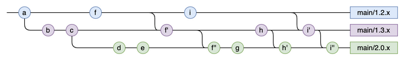
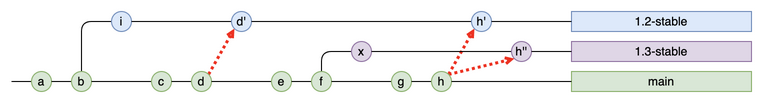
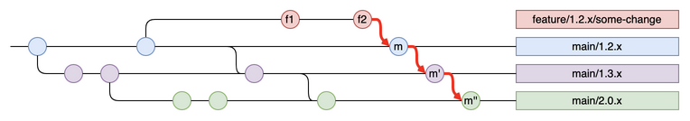
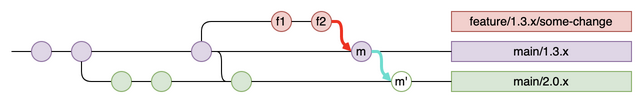
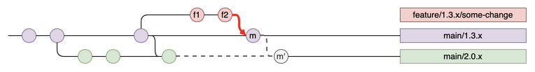
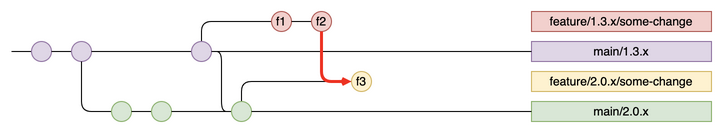
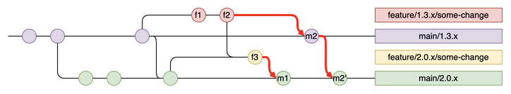
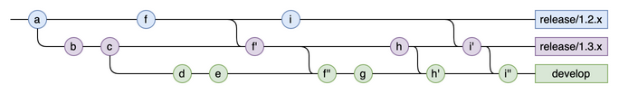

MultiMain Git branching model
The MultiMain Git branching model is useful for teams maintaining multiple versions of a project concurrently over a long time period (months or years). It is similar to the git-flow branching model.
One main branch per maintained version stream

In the MultiMain branching model, you have one main branch per maintained version stream. Imagine you support patch releases for:
-
version stream
1.2.x-
released versions in this stream:
1.2.0,1.2.1,1.2.2…1.2.13,1.2.14, …
-
-
version stream
1.3.x-
released versions in this stream:
1.3.0…1.3.6,1.3.7,1.3.8…
-
-
Version stream
1.2.x-
Released versions in this stream:
1.2.0,1.2.1,1.2.2,…,1.2.13,1.2.14,…
-
-
Version stream
1.3.x-
Released versions in this stream:
1.3.0,…,1.3.6,1.3.7,1.3.8…
-
At the same time, you’re preparing the next major version 2.0.0, with its own dedicated stream 2.0.x.
This results in three main branches (main/1.2.x, main/1.3.x, and main/2.0.x), each corresponding to a different version stream.
The naming pattern main/<stream>, where <stream> is the name of the stream, is fairly common in such cases.
The <stream> part of branch names is a matter of project organization.
If you work with a major.minor.patch version pattern, but maintain only one version per major version (version 2, version 3, version 4 and so on), the streams may be called 2.x.x, 3.x.x, or 4.x.x.
In that case, the branches might be named:
-
main/2.x.x -
main/3.x.x -
main/4.x.x
You could also drop the x.x suffix and only use:
-
main/2 -
main/3 -
main/4
Which naming convention you end up using is up to your team.
Making a change to multiple versions
Some Git flows, such as the GitLab flow, recommend developing on the main branch and cherry-picking relevant changes to the branches corresponding to older maintained versions.

In the MultiMain flow, you alway do the change first the oldest version you are supporting (main/1.2.x in the example) and you apply the same change through all the branches corresponding to the branches you are supporting.

The key advantage of this flow is that it’s designed toensure the change is applied everywhere. It eliminates the risk that someone forgets to cherry-pick a commit. Additionally, you only have to solve potential merge conflicts once, when applying the change the first time, and not every time you cherry-pick a commit to an older branch.
You can define that the developer who makes the change must apply their change to all branches. When you work with cherry-picking, it’s often up to the build engineer to backport changes.
Important points
Always merge forward
It can happen that a change is only relevant for older branches and not for the newer versions (because the feature fixed on an older branch no longer exists in the newer version). Sometimes, a change is only relevant for older branches, for example because the feature fixed on an older branch no longer exists in newer versions. In such cases, you must still merge through the different branches with an empty merge commit.
In the diagram below, the feature corresponding to the commits f1 and f2 is no longer present in version 2.0.x and should only be merged into the branch main/1.3.x:

To make sure the branch feature/1.3.x/some-change is only merged into main/1.3.x, after having created the first merge commit m, check out the branch main/2.0.x and run the following command:
git merge -s ours main/1.3.xThis way the developer doing the next change on an older version will not have any conflict or unfinished merge problems when he tries to cascade his change through the branches.
Bottleneck
If there is a conflict between 2 main branches when cascading a given change, this can create a bottleneck (the subsequent changes that should also be cascaded are stuck).

It might take time to solve the conflicts to create the merge commit that correspond to the cascade of the change.
The solution to this problem is to work with two feature branches:

A second branch feature/2.0.x/some-change, branched from main/2.0.x is created.
The branch feature/1.3.x/some-change is merged into feature/2.0.x/some-change (this creates commit f3)
Once the 2 features branches are ready (it doesn’t matter how much time it takes to have everything looking good). Two merge requests can be opened for each feature branch:
-
First
feature/2.0.x/some-changeis merged tomain/2.0.x -
Then
feature/1.3.x/some-changeis merge tomain/1.3.xwhich can be directly cascaded tomain/2.0.xsince the conflict was already resolved with the first merge request.

Tooling support
Bitbucket
See Bitbucket’s automatic branch merging feature.
GitLab
This project implements the MultiMain branching model for GitLab.
The ucascade tool creates the necessary follow-up merge requests when an initial merge request is merged into a main branch.
Appendix
Legacy naming
Some projects more in line with the git-flow terminology give their main branches different names:
-
release/1.2.x -
release/1.3.x -
develop(for the version2.0.x)

Only the names of the branches differ, but the idea is the same.
Having a different name for develop doesn´t provide any benefits, since it’s no different from the other “release” branches.
Also, occasional contributors to a project may find it difficult to determine which version the develop branch corresponds to.
Feedback
Was this page helpful?
Glad to hear it! Please tell us how we can improve.
Sorry to hear that. Please tell us how we can improve.